Meet your cityhost
Here are some things I can assist you with...
 Gemeente Breda
Dit project is ontstaan vanuit de behoefte om informatie toegankelijk te maken voor iedereen, ongeacht digitale- of taalvaardigheden. Doormiddel van innovatie onderzoeken we op basis van diverse prototypes hoe we hier invulling aan kunnen geven.
Concept: Een City Host voor arbeidsmigranten in NederlandWe willen dat arbeidsmigranten zich welkom en geïnformeerd voelen in Nederland, en dat ze weten waar ze terecht kunnen voor hulp of advies. We geloven dat dit bijdraagt aan een betere integratie en een eerlijkere arbeidsmarkt.
Als je komt werken en wonen in Nederland komt er veel op je af. Deze City Host helpt je bij de uitleg over je rechten en plichten, wat je moet regelen en welke afspraken je moet maken. Zo word je geholpen om hier veilig, gezond en prettig te kunnen wonen en werken. Je kunt de informatie lezen in verschillende talen of luisteren naar een audioversie.
Dit initiatief maakt onderdeel uit van Brabant Migratie Informatie Punt (BMIP). De Provincie Noord-Brabant wordt de proeftuin voor de landelijke vorm van informatievoorziening en dienstverlening voor arbeidsmigranten. In de pilot wordt geëxperimenteerd met verschillende vormen van dienstverlening. De resultaten van de pilot in Noord-Brabant zullen door de provincie en het Rijk gezamenlijk worden geëvalueerd. De opbrengsten kunnen de volgende stap zijn naar een landelijke uitrol van een uniform model